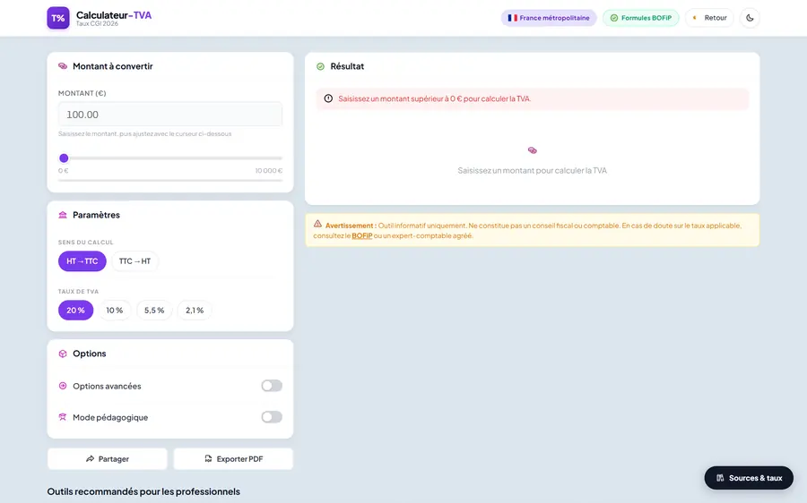
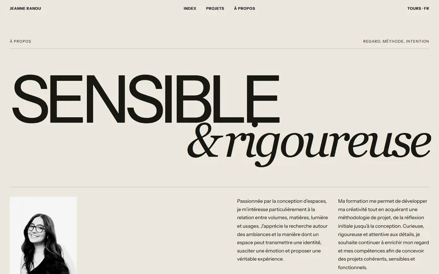

Qualamantis
Consulenza, competenza, tre lingue.
Esplora i siti realizzati e i relativi casi studio. Ogni progetto racconta le esigenze del cliente, le scelte di progettazione e il sito online.
Catture dei siti così come sono online oggi — clicca una schermata per aprire il caso studio.
Consulenza, competenza, tre lingue.

Vita associativa, eventi, biglietteria.


Calcolatrici, simulatori, strumenti di settore.




Portfolio, galleria, aggiornamenti autonomi.




Ristorante, bar, caffè. Progetto dimostrativo.
Media studentesco indipendente. Sito online.